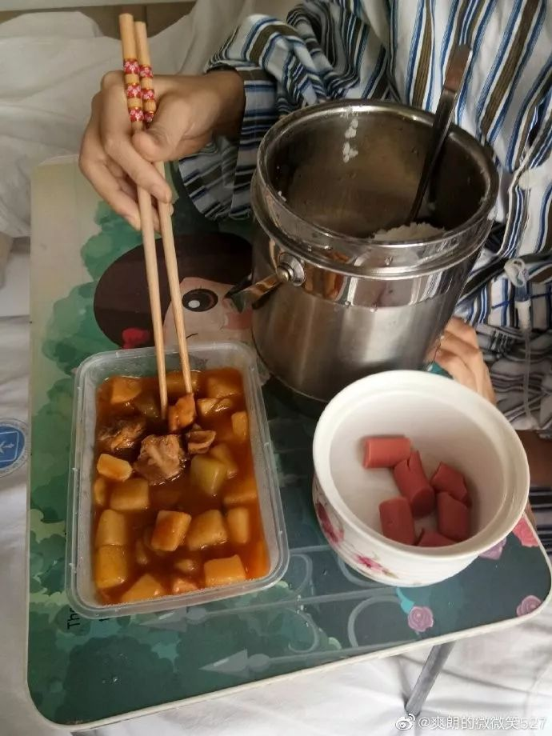

守护“新冠孕妇”
原文链接 备份链接 她们是疫情中心湖北的待产准妈妈，其中有疑似或确诊的新冠病毒感染者。对于医生护士来说，无论是守护孕妇，还是保护即将降生的新生儿，都是巨大挑战 摄影/本刊记者 王小 *刘以秦 王博 房宫一柳 | 文 * *马克 | 编辑* …


新冠疫情爆发以来，武汉市已征用50家医院作为定点医院，很多非新冠病人要么在治疗中被清理出院，要么在疫情期间发病，面临就医困难。
8个月大的陈锦媛，身患罕见先天性心脏病，急需手术，父母驾车千里“突围”，送她到北京，但她还得在隔离点等待14天才能进医院。
20岁的白血病患者万茹意，化疗中病情出现反复，遭遇新冠疫情，无法转去更好的医院，只好原地等待奇迹。
62岁的王建忠，肺结核加肾衰竭，几经周折，在有关部门协调下，才得以入院治疗。
严峻的新冠疫情之下，让患者和家属备受困扰的，还不止是医疗资源紧张。

在北京西城区一家连锁酒店，陈恒阳和8个月大的女儿已经隔离了整整10天。
10天前，为了让女儿做上救命的心脏手术，这个35岁的湖北汉子一路自驾16个小时来到北京。但他们并不能立刻进入早已联系好的医院，根据政策，凡是从湖北入京的人员，必须集中隔离14天，这是谁也无法逾越的底线。
“说实话，小孩病得这么重，我们自己也有心理准备，这已经是我们能想到的最好的办法了。”陈恒阳告诉八点健闻，女儿原本应该在武汉协和医院治疗，但受到这次新冠疫情的影响，手术被无限期延后。
自从1月份新冠疫情爆发以来，为了应对持续增加的确诊病例，武汉市已经分5批总共征用了50家医院作为市级新冠肺炎定点医院。截至2月19日，其中46家完成改造投入使用，开放床位19989张。
为配合改造，原先在这些医院就医的非新冠病人被清理出院。病情较重的患者可以留院隔离，但无法进行下一步治疗。有刚性需求的病人，由原医院帮忙联系接续机构，但不确保百分之百有床位。而更多“病情暂时可控”的病人，则只能回到家中，活在“随时可能复发”的阴影里。
2月18日，武汉市卫健委公布了《全市非新冠肺炎特殊患者医疗救治医院名单》，按照6个类型划定了对应的救治医院，分别是：急性心脑血管、外伤等急危重症，血液透析，孕产妇及儿童，恶性肿瘤（含恶性血液病）及慢性疾病，五官科疾病和烧伤。除了五官科疾病和烧伤，其余4类对应的医院都有10家以上。
一位参与武汉透析病人服务的志愿者告诉八点健闻，随着医院透析机位的增加，透析病人这块的情况已经基本好转，绝大多数患者的常规需求都可以得到满足。“只有个别疑似感染的病友，需要去新冠定点医院做隔离透析，但基本的防护措施都有，问题不大。”
遗憾的是，这份能够解决大部分患者需求的文件，却对陈恒阳没有半点帮助。他的女儿需要尽快手术才能救命，但就武汉目前的医疗资源来说，为非新冠患者动一场手术几乎是不可能的。
目前在武汉，和陈恒阳遭遇同样困境的患者家庭还不在少数。
从武汉到北京做手术的罕见病女婴
2月17日下午，陈恒阳在微博上晒出两张小女儿的照片，并写道：“隔离了一个星期，宝宝加油”。照片拍摄的地点是位于北京西城区马连道附近的一家连锁酒店，距离全球最大的小儿心脏中心——北京阜外医院小儿外科中心仅有7公里。如果不出意外，7天后，他的女儿将在那里接受手术。
“我们现在最担心的就是她能不能熬到那个时候，目前看来情况还算好。”

△ 陈恒阳微博截图
2月10日，为了给女儿治病，陈恒阳开车带着妻子女儿从武汉出发，途径河南、河北，全程1200公里，到达北京已经是第二天下午。
当天，一家三口就被安排住进了西城区的定点隔离酒店，为了保证女儿在14天隔离期内的安全，陈恒阳和妻子寸步不离地照看。“最怕的就是缺氧，但没办法，这是她最后的机会，如果真的不行了，我们也有心理准备。”
陈恒阳的女儿叫陈锦媛，出生于2019年6月。12月29日，小锦媛因为爆发性心肌炎被送到湖北省妇幼医院抢救，随后转到武汉协和医院心外科继续治疗。1月19日，因为新冠疫情的影响，协和医院建议陈恒阳办理出院手续，让女儿在家静养。“我们自己也怕被感染，就搬出来了。”
此后，小锦媛的病情历经几次反复。2月初，冒着被感染的风险，陈恒阳带女儿到协和医院做了一次CT血管成像， 诊断结果为“左冠状动脉异常起源于肺动脉”，这是一种极为罕见的先天性疾病，发病率仅为1/300000，死亡率极高。
“当时协和医院的医生告诉我，出于人道主义，他们可以把我们收进医院做保守治疗，但手术肯定是动不了，要等疫情好转以后。”陈恒阳上网查了资料，发现这种病在1岁前的死亡率超过90%，女儿8个月了，“你说这怎么等得起？”
柳暗花明，陈恒阳从病友群里得知，北京阜外医院在这方面很有经验，手术成功率很高，便决定送女儿去北京。他联系上阜外医院，对方的回复是，只要能到得了北京，他们就收，但必须要隔离够14天。“家里商量了一下，觉得还是要拼这一把。不然再等两个月，很可能连拼的机会都没了。”
那时候，武汉已经交通封城10多天。陈恒阳找到社区说明了情况，并且带去了女儿的病历证明，社区反映给了街道，街道再反映到了区里，最后区防疫指挥部为他开出了特殊通行证。唯一的要求是，自己开车。让陈恒阳庆幸的是，从提交材料到拿到通行证明，只用了两天时间。
2月10日晚上10点多，带女儿在协和医院打完强心针后，陈恒阳和妻子开车出发了。选择这个时间是因为他怕白天卡口太多，万一被遣返，前功尽弃。所幸一路上还算顺利，陈恒阳在微博上写道：“开了16个小时，基本没有停过，每个服务区都有检查人员，不敢进去，一路上防疫部门检查站，轮流盘问，各种解释，自己都能哭起来。”
对于陈恒阳来说，最紧张的一次盘问发生在下北京的高速口，“之前都是看一下证件就放行了，因为小孩就在车里，他们知道我没有说谎。但在北京那个高速口，一直盘问了我半个小时，问我来北京干嘛，医院联系好了没有，住在哪里，然后他还要再向上面的领导汇报，但最后还是放我们下去了。”
更幸运的是，他们出发第二天，武汉市就宣布在全市范围内所有住宅小区进行封闭管理。
如今，陈恒阳每天都会发微博记录女儿在北京的隔离生活。时常会有好心人问他，需不需要帮助，建议他开通一个筹款渠道。他回答说，自己这一趟出来，本来争议就挺大的了，很多人觉得他是利用女儿的病逃离武汉，这个时候去筹款会加深误会的。
在协和等待奇迹的白血病女孩
比起已经在北京等待手术的小锦媛，20岁的武汉女孩万茹意就不那么幸运了，她连冒险的机会都没有。因为没有其他医院愿意接收，她只能待在武汉协和医院血液科的病房里，等着奇迹出现。
万茹意得的是急性淋巴细胞白血病，自从去年5月确诊以来，已经经历了三轮化疗。原本的治疗方案，是通过化疗暂时控制住癌细胞，让身体达到骨髓移植的条件。但去年11月5日，化疗结束后的复查显示，万茹意体内的癌细胞复发，第一期治疗宣告失败。
11月11日，万茹意再次住院接受CART治疗，周期为89天，目的同样是为最后的移植手术创造条件。不幸的是两个半月后，病情第二次复发。
万茹意的母亲吴琼透露，1月29日，女儿开始腿疼，1月31日去医院做了骨穿，原本三天后就能知道结果，但因为新冠疫情，医生要么被抽调去了一线，要么在家调休，整个血液科几乎处于瘫痪状态。“2月8日那天，孩子实在疼得受不了，我们就联系了院办，院办给教授打了电话，教授自己想办法看了结果，证实是复发了。”
主治专家告诉吴琼，基于目前的状况，协和已经无能为力，建议她把女儿转去水平更高的医院，或许还有一线生机。吴琼说，这个希望的火光，很快就被掐灭了。她尝试联系了两家全国最好的血液病医院，一家在河北，一家在北京，对方听说她是武汉的，当即拒绝收治。
更让吴琼懊悔的是，今年1月中旬，CART治疗还在进行中时，她曾联系过这两家医院，希望后期可以去做骨髓移植，当时两家医院都愿意接收。河北那家医院甚至还给她们做了排仓。“那时候还没有疫情的说法，现在想想是有点后悔的，如果当时冒冒险直接转过去，或许情况就完全不一样了。”
吴琼说，长达大半年的治疗，女儿已经被折磨得身心俱疲。自从去年5月份化疗以来，呕吐、溃疡、腹泻这些副作用就没有断过，头发和眉毛全都掉光了，有一次照镜子还照哭了，说自己怎么丑得像个外星人。因为化疗伤了脾胃，她每顿只能吃炖得稀烂的萝卜糊，连吃了好几个月。这些都不算什么，最难忍的是疼痛，发作起来，撕心裂肺地叫，脸都会狰狞到变形。
“她跟我说过，安乐死算了，太累了，让我们过自己的日子，把她忘了，养只狗遛一遛……你说我们做父母的怎么答应得下来。”

△ 万茹意的午餐（图片来自吴琼微博）
为了尽可能挽救女儿，吴琼咬牙决定再上两次化疗，这是她能想到的唯一办法。“我现在想的就是先把她这个人留住，能留多久留多久。那两家医院都说了，等疫情结束会马上安排我们过去。”
但“疫情结束”的标准是什么，还需要多长时间，她心里也没底。
艰难求医的肾衰竭老人
“为什么这些平时普通医院就能看好的病，现在能要了人的命？”最近几天，王鑫打了不下一百个电话，目的只有一个：让自己身在武汉的父亲王建忠做上透析，保住性命。
2019年10月，62岁的王建忠被确诊为肺结核，此后一直通过药物治疗，今年2月14日因为药物副作用被查出急性肾衰竭，血肌酐高达1450μmol/L（正常值为50-100μmol/L），这在医学上意味着肾功能严重损伤，排毒功能几乎丧失。当时，王建忠已经出现了呼吸困难，嘴唇发紫，排尿困难，因为无法卧床，连晚上睡觉都得坐着。
远嫁湖南的王鑫第一时间联系了娘家所在的社区，希望他们为父亲安排医院。由于王建忠也有典型的肺炎症状，社区按照新冠疑似病例做了上报。2月17日一早，由军医接手改造的泰康同济医院打来电话，表示可以收治。
王鑫起初还有些犹豫，因为泰康同济是新冠肺炎患者的定点医院，而父亲实际上并没有感染新冠肺炎，只需要透析治疗。“我就跟他们说，我爸爸不是疑似病例，能不能给我们一个隔离病房。后来那边又来了一个人听电话，语气很严厉，就问我爸爸到底是不是疑似，如果不是，就把我们的名字划掉。如果是的话，他们上门强制执行。”
工作人员的态度和防疫政策有关。两天前，“空降”湖北的省委常委王贺胜在其首次公开亮相的国新办发布会上表示，要确保确诊患者和疑似患者全部得到收治，这也成了短期内湖北疫情防控的第一要务。
王鑫说了实话，父亲也因此被取消了入院资格，这或许会成为她这辈子最后悔的决定。当天，王建忠的病情突然加重，开始尿血，上厕所时直接跪倒在了马桶前。
老两口叫了社区的车，跑遍了辖区内的三家医院——武汉市同济医院、第五人民医院和汉阳医院，没有一家能够接收。在同济医院，王建忠60多岁的妻子给医生当场下跪，得到的答复依然是不行。
另一边，王鑫按照社区提供的名单，电话联系了武汉市第一、第二、第九、普仁、普爱等多家医院，也无一例外被拒绝。理由有两个：第一，王建忠有肺结核的基础疾病，会传染给其它患者；第二，医院的透析机器已经满负荷运转，无力再收治新的病人。
有志愿者向她建议，可以尝试在湖南为父亲找到一家愿意接收的医院，再办理特殊通行证把父亲从武汉接出来。但这条路没能走通，王鑫联系了湖南的多家医院，对方均表示，必须经过14天的隔离才能收治，这是底线。
“我们现在就希望指挥部能够协调一下，找家医院给我父亲做透析，即便是在新冠定点医院，即便被感染上了病毒也无所谓，让我们先把人留住！”
好在事情终于有了转机。2月19日晚，王鑫告诉八点健闻，她的父亲在当地有关部门的协调下，已经住进了汉阳医院接受透析。
毛晓琼|撰稿
微信号：234379189
刘冉|责编
微信号：foooorest

我们尊重原创版权，未经允许请勿转载。
授权转载
郑琪 微信号: 1281949389
商务合作
上海：leslee 13916263824
北京：Jessie 13911125922
线索爆料、意见反馈，加入核心读者社群
请扫码联系健闻君

让朋友们看到你也在看
↓↓↓
长按二维码向我转账
受苹果公司新规定影响，微信 iOS 版的赞赏功能被关闭，可通过二维码转账支持公众号。
原文链接 备份链接 她们是疫情中心湖北的待产准妈妈，其中有疑似或确诊的新冠病毒感染者。对于医生护士来说，无论是守护孕妇，还是保护即将降生的新生儿，都是巨大挑战 摄影/本刊记者 王小 *刘以秦 王博 房宫一柳 | 文 * *马克 | 编辑* …
原文链接 备份链接 有时候半夜突然想到某个可能的漏洞，惊出一身冷汗。 记者 | 黄 祺 抗击新冠肺炎疫情的紧要关头，医院不能失守。 中国疾控中心2月17日的一份研究报告显示，全国已有3019名医务人员感染了新型冠状病毒，其中包括1716 …
原文链接 备份链接 疫情危机再一次提醒我们，在公共卫生方面，从政府、社会到公众，我们还有很多功课未能完成。 作者 | 朱纪明 程峰（清华大学医学院公共健康研究中心） 编辑 | 徐菁菁 药物和疫苗不一定“特效” 身在疫情中，大众的期待是特效 …
原文链接 备份链接 3月21日。 封城第59天。这么长时间了！ 昨天那么大的太阳，今天突然就阴了。下午还下了点雨。这时节的春雨，对于院子里的树以及花，都还是很需要的。前两三天，武大樱花盛开，树下空荡无人，估计是记者拍了一些照片，同学群里便 …
原文链接 备份链接 IMF认为，若一切向好的方向发展，中国经济有望从二季度开始恢复正常。近日个别国家和地区确诊病例激增，确诊首例新冠病毒感染病例的国家和地区也在增加，是新感染群体的感染源越来越难以查明？还是疫情传播到了某个新的临界点？ …